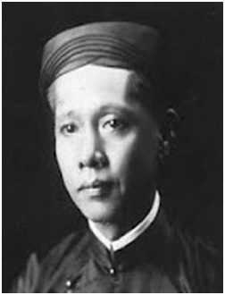

Sĩ Tải Trương Vĩnh Ký Tiên Sanh là một vị Tân Quân Tử thật của nước Việt Nam ta, ai ai cũng đều biết cả.

TRƯƠNG VĨNH KÝ
1837-1898
Nhơn dịp này, hình ngài sẽ dựng trước đường Norodom, ngang Dinh Quan Toàn Quyền, Sài Gòn. Vậy cũng thỏa lòng công chúng hy vọng bấy lâu, nên bổn lịch sử của ngài tôi đã soạn rồi, chẳng lẽ dám dấu làm riêng; vậy xin xuất bàn cho nhiều phần (10.000 bổn), đặng dưng cho công chúng tường lãm.
Chúng ta đã muốn dựng hình Quân Tử, thời nên đọc truyện Quân tử mới trọn tình cảm mộ; được bắt chước theo Quân Tử Hàn Vi mà sửa nhân cách cho hoàn toàn; nhân cách thảy được hoàn toàn, thời xã hội ta ngày nay biết bao nhiêu là hạnh phúc!!!
Đặng Thúc Liêng
Trương Chánh Ký sau đổi chữ lót giữa là ‘’Vĩnh’’, đến nay hễ những người Việt Nam và người Pháp có học Việt-Pháp Tự Âm, thời đều nhớ công đức mà xưng hô rằng: ‘’Sĩ Tải Trương Vĩnh Ký’’ Tiên Sanh, hoặc ‘’Pétrus Ký’’.
Người ở làng Vĩnh Thành (Cái Mơn), Tổng Minh Lý, Huyện Tân Minh, Phủ Hoằng An, Tỉnh Vĩnh Long; con trai thứ của ông Trương Chánh Thi, bà Nguyễn Thị Châu, sanh năm thứ 17, đời Vua minh Mạng (1836). Cha đi thú Thành Nam Vang, bịnh mất trong hàng binh. Gia đình thảm kịch, thương xót biết là dường nào!
Lúc 5 tuổi, ở với mẹ, cùng anh là Chánh Sử đi học chữ Nho với Lão Nho ‘’Học’’ dạy trường trong xóm, 9 tuổi học vừa nghe sách Khổng, Mạnh. Nhà ở gần Thiên Chúa Giáo Đường thường gặp Cố Tám là người thuộc ‘’Thiên Chúa Giáo’’, thấy Vĩnh Ký còn nhỏ mà thiên tư đĩnh ngộ, để lòng thương, xin với bà mẹ cho theo học Đạo Thiên Chúa, lần lần tập kích ‘’Nhựt Khóa’’ thông chữ Quốc Ngữ, nên thường theo Cố Tám qua Cái Mơn giảng Đạo Thiên Chúa, xảy gặp Linh Mục Long ở Lang Sa mới qua. Cố Tám cho theo hầu Linh Mục Long, được học tập chữ la-tinh; trong 7 năm ấy đã học được ba thứ chữ (chữ Hán, chữ Quốc Ngữ, chữ La-tinh)
Từ năm thứ 14 đời Vua Minh Mạng (1833) sắp về sau, Vua Minh Mạng muốn quyết trừ Đạo Thiên Chúa cho tiêu diệt, nên hạ chỉ ‘’Sát Tả’’ (Tả là ‘’Trái’’ không đồng đạo kêu là ‘’Tả Đạo’’. Đại Nam Bộ Văn). Lúc ấy Triều Đình quan lại đương tìm bắt những người thuộc Thiên Chúa Giáo, ý không muốn cho để sót một con đỏ!!! Bởi vậy hiệu lịnh ‘’Sát Tả’’ càng ngày càng nghiêm nhặt! Trong Nam Kỳ mấy phái giảng Đạo Thiên Chúa là Thầy Marchand, Thầy Taberd và cả môn đồ, kẻ thì bị bắt hạ ngục, kẻ thì bị giết, không biết bao nhiêu! Trong cơn nguy hiểm ấy, những người giữ Đạo Thiên Chúa phải lo tỵ tử lăn xăn. Tuy vậy, song Vĩnh Ký vẫn cứ chân truyền cùng Linh Mục Long bôn tẩu cho khỏi vòng hoạn nạn, hơn bốn năm; may cho Sư-Đệ đều đặn bảo toàn tánh mạng! Cái họa nước Nam ta phi thai từ đó, nghĩ rất ngậm nguồi!
Đến 12 tuổi (1818) có lịnh Giám Mục bổ Vĩnh Ký theo Cố Hòa (Pére Belleveaux) là Thầy Cai Trường ‘’Phi Nha Lư’’ ở Nam Vang, mà giúp Thầy dạy học và học thêm chữ ‘’La-Phi’’ (Epitomce); gặp dịp ấy, nên có ý nguyện học cho tới làm bực Giám Mục (Evêque).
1850 vừa 14 tuổi, lại vưng lịnh Giám Mục đi qua ‘’Phi Năng’’ (Pénang) ở Trường ‘’Du Lam’’ (Dulalma) học Triết Học (Philosophie).
1856 đã lên đứng theo hàng Linh Mục (Sacerdoftes). Từ đó sắp sau lại gồm hiểu được chữ Langsa, La-tinh, Anglais, Espagnol, Chinois, Malayu, Cao Man, Xiêm La, Chà Và và Nhựt Bổn. Có ngày kia phụ thí chữ Hồng Mao trúng bực ‘’Ưu’’ (đậu đầu). Vĩnh Ký ngày sau mà thành được ‘’Tân Đạo Đức, Văn Chương Gia’’, lại có danh giá đặc biệt là: ‘’Bát học’’ được 10 thứ chữ của Ngoại Quốc (Đại Nam Quốc Lược Sử, Alfred Schreiner) đứng vào địa vị ‘’Toán cầu bát học thập bác quân tử’’ (le biographe 1873-1874), rủi chúc, chớ không đà rõ tài kinh tế, gầy hội Phong Vân! Được như vậy tuy là gặp nhiều cơ hội lạ lùng nhờ có nhân duyên may mắng, song duyệt lịch lắm phen tân khổ, mà công phu nào kẻ nhọc nhắn, nên giữ được cái nghị lực vững bền theo sự học, mấy ai bì kịp? Tốt vậy thay! Đáng kính vậy thay!
Vĩnh Ký ở Phi Năng được 8 năm (1858) vừa nghe tin mẹ từ trần, vội vã về nhà ở Cái Nhum thủ chế!
(1850) đời Vua Tự Đức thứ 12, Đại Pháp qua chiếm cứ xứ Nam Kỳ, trước hết lấy Tỉnh Gia Định; Quan Thủy Sư Bonnard đương phỏng vấn những người Nam thông tiếng Âu Châu để dụng sự. Giám Mục sở tại tiến dẫn Vĩnh Ký ra làm Thông Ngôn (20 Décembre 1860), kế lãnh làm Đốc Học Trường Thông Ngôn tại Sài Gòn (Đại Nam Quốc Lược Sử, Alfred Schreiner).